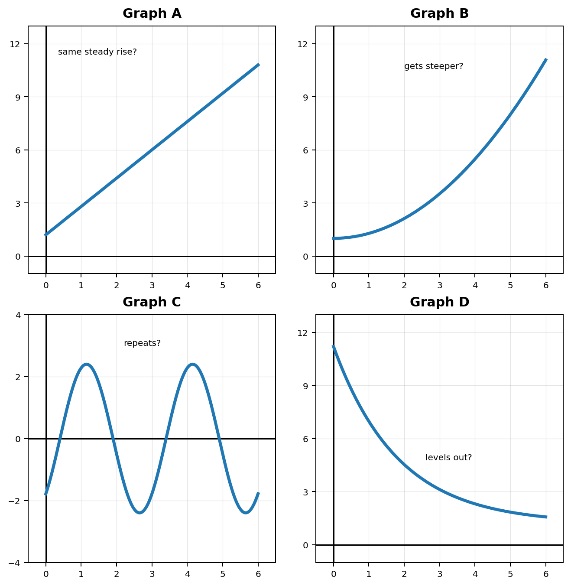
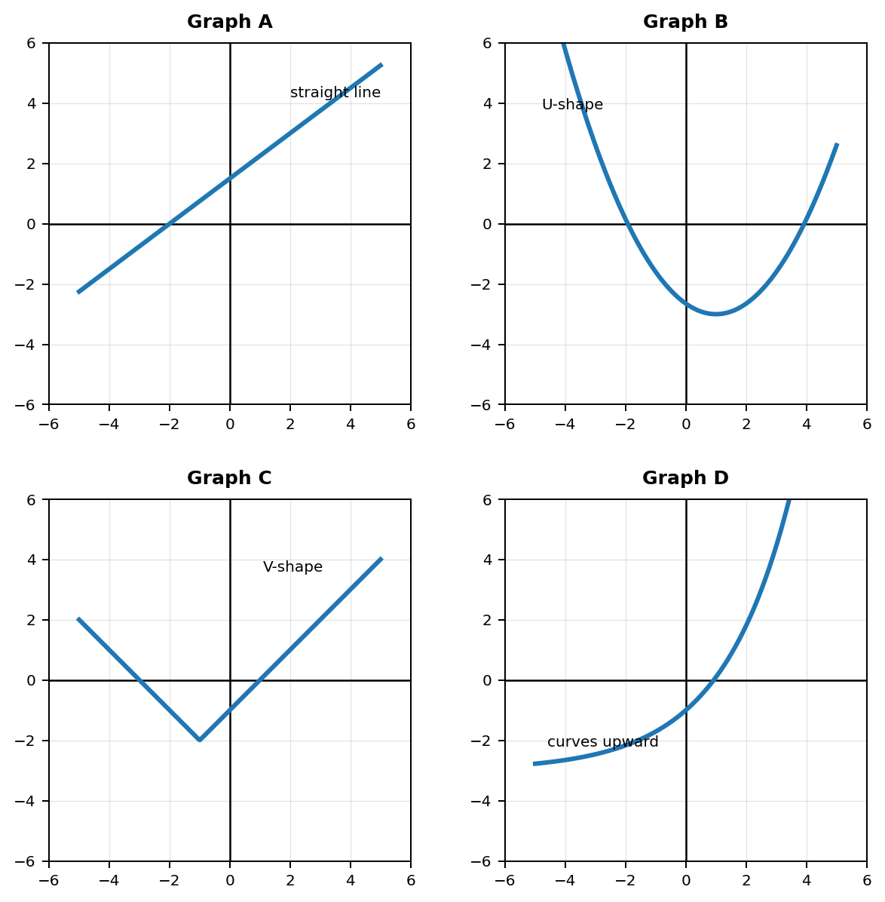
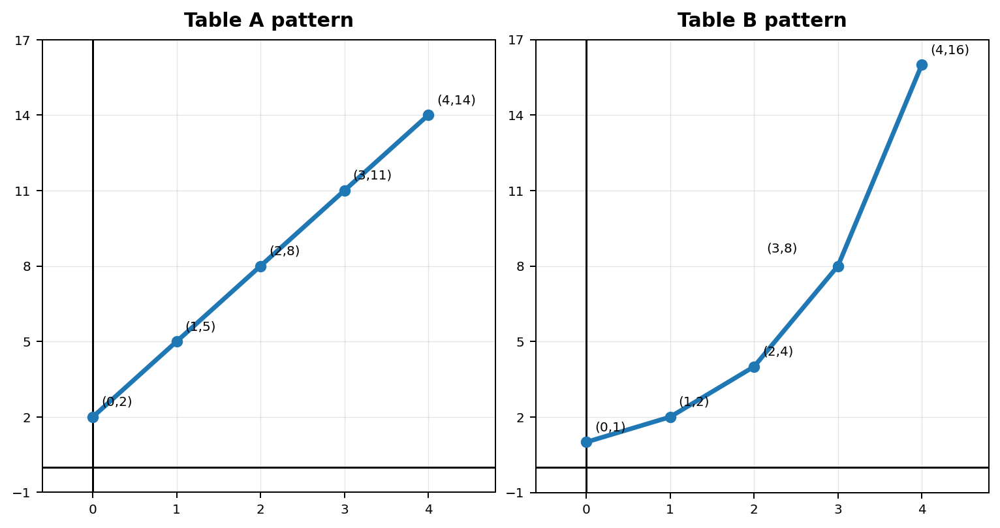
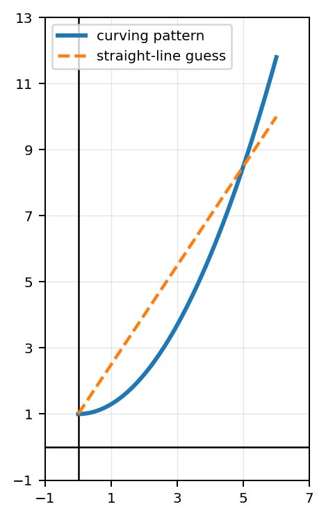

Mathematical idea: A function family is like a pattern family. The members may look different, but they share important behavior.
Today we will sort common function families using graphs, tables, equations, and contexts. The goal is classification and reasoning, not full modeling yet.
Students will recognize common function families from graphs, tables, equations, and contexts.
I can statements
Later in this course, you will understand much more about the task below. For now, do not solve it. Instead, annotate it individually. Circle anything familiar, underline words or graph features that seem important, and write notes about what information you think will be needed.
As you annotate, ask yourself: Are all relationships that increase basically the same? Which graph changes by about the same amount each time? Which graph changes faster and faster? Which graph repeats? Which graph decreases and levels out? What might make two relationships belong to the same function family?
Future Task
A student says, “Most real-world relationships are basically the same because the outputs just get bigger or smaller.” The four situations and four graph shapes below may or may not support that claim.
A water tank fills at a steady rate each minute.
A shared post reaches more people each hour because each group shares it with more groups.
Outdoor temperature rises and falls in a repeating daily pattern.
A phone battery drops quickly at first, then the percent changes more slowly.

Directions
Read the introduction aloud with a partner or in a small group. As you read, annotate the text by highlighting important ideas, circling key vocabulary, and writing short notes about connections, questions, or predictions in the margins.
A function family is a group of functions that share a common shape or pattern. Families help us recognize what kind of relationship we are looking at before we know every detail.
Some function families are easy to spot from a graph. A linear function makes a straight line. A quadratic function makes a U-shape called a parabola. An absolute value function often makes a V-shape. An exponential function curves because it changes by multiplying instead of adding the same amount.
Tables and equations can also give clues. A table with the same change each step often points to a linear relationship. An equation with $x^2$ often points to a quadratic relationship. An equation with the variable in the exponent, such as $2^x$, points to an exponential relationship.
Today we are not trying to prove a perfect model for every situation. We are learning to classify, compare, and explain evidence. A good classification answer says more than the family name. It explains what feature helped you decide.
Stop and Discuss
Many function families have a shape that is useful for a first classification. The shape is not the whole story, but it is a strong place to start.
Linear: straight-line behavior
Quadratic: U-shaped parabola behavior
Absolute value: V-shaped behavior
Exponential: curved growth or decay behavior
Match each graph to the most likely function family: linear, quadratic, absolute value, or exponential. Then write one piece of evidence for each match.

A graph is shaped like a V and has one clear turning point. Which function family is most likely? Explain the graph evidence you used.
Most likely absolute value because the graph is V-shaped and has one clear turning point.
🔴 Teacher Note: Quick CFU: “What shape would make you think quadratic instead?” Extension: compare V-shape and U-shape.Stop and Discuss
An equation can show the family by how the input is used. Look for structure: Is $x$ being multiplied by a constant, squared, inside an absolute value, or used as an exponent?
Structure clue: A part of an equation that helps you recognize how the function behaves.
Classify each equation by function family. Then underline or describe the structure clue.
A student says $y=4^x+1$ is linear because it has a $+1$ at the end. Critique the claim using the structure of the equation.
The claim is incorrect. $y=4^x+1$ is exponential because the input $x$ is used as an exponent. The $+1$ shifts the outputs but does not make the relationship linear.
🔴 Teacher Note: Common misconception: any equation with “$+1$” or a simple number at the end is linear.A table can show whether the outputs are changing by adding a steady amount or by multiplying by a steady factor. This does not tell every detail, but it can give strong evidence for a family.
Use the tables to decide which pattern looks more linear and which pattern looks more exponential. Explain using how the outputs change.
Table A
| $x$ | $0$ | $1$ | $2$ | $3$ | $4$ |
|---|---|---|---|---|---|
| $y$ | $2$ | $5$ | $8$ | $11$ | $14$ |
Table B
| $x$ | $0$ | $1$ | $2$ | $3$ | $4$ |
|---|---|---|---|---|---|
| $y$ | $1$ | $2$ | $4$ | $8$ | $16$ |

A table has outputs $10$, $15$, $20$, $25$, and $30$ as the inputs increase by $1$. Which family is most likely? Explain what stays the same.
Most likely linear. The outputs increase by a constant amount: $+5$ each time.
🔴 Teacher Note: Quick CFU: “What would the outputs need to do for exponential evidence?”Stop and Discuss
When we classify a function family, we decide what type of behavior seems most likely. A full model would need more information, like an exact equation, exact starting value, or a reason the pattern should continue.
A student sees the graph below and says, “This is definitely linear because it goes up as $x$ increases.” Critique the claim using graph evidence.

The claim is weak. A graph can increase without being linear. Linear graphs must increase or decrease at a constant rate and form a straight line. This graph curves, so it is not definitely linear.
🔴 Teacher Note: Key point: “goes up” describes direction, not family.A student says, “If I can name the family, then I know the exact equation.” Do you agree? Explain the difference between classifying a family and finding a full model.
Disagree. Naming the family tells the general type of behavior, but it does not give the exact equation. Many functions can belong to the same family and have different starting values, rates, shifts, or scales.
🔴 Teacher Note: Extension: ask students to name two different linear equations.Stop and Discuss
Do not solve the future task yet.
Look back at the future task. Highlight one graph shape that makes more sense now than it did at the beginning. Circle one part that still feels unfamiliar. Write one sentence about what makes two relationships seem like they belong to the same function family.